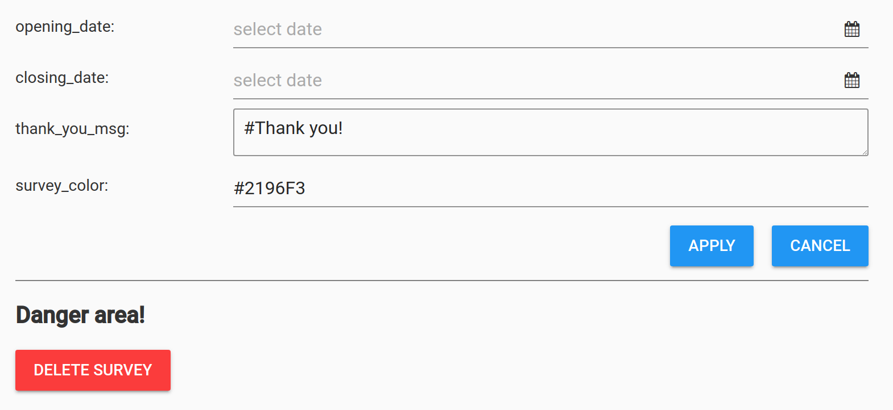

Survey settings¶
Each Survey has its own settings and these can be accessed through the survey dashboard by clicking the icon.
Survey settings 
Opening and closing dates¶
The opening and closing dates can be chosen by selecting a date and time from the "date picker" elements. If a date option is left blank, there is no restriction on the corresponding field.
Thank you message¶
The text area allows you to write markdown to express a "thank you message". The message will appear after the survey has been submitted by the user.
Survey color¶
You can change the main color of the end user's survey by entering a hex code (e.g., #2196F3) This will not affect the color in the survey designer.
Deleting a survey¶
The big red button allows a survey to be deleted. A confirmation dialogue will pop up just to be safe.
Deleting a survey?
Be careful! Once a survey is deleted, its structure and associated data cannot be restored; however, if you have the JSON representation of your survey saved on your local computer, you can restore the survey structure using the command line feature.